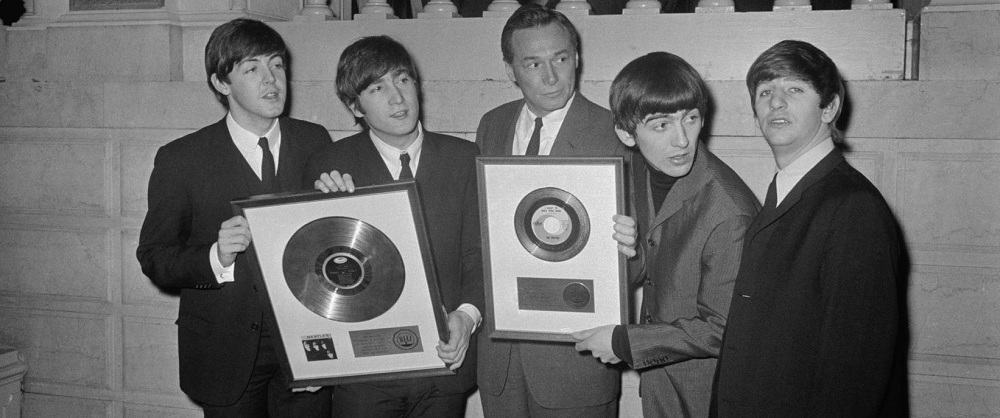
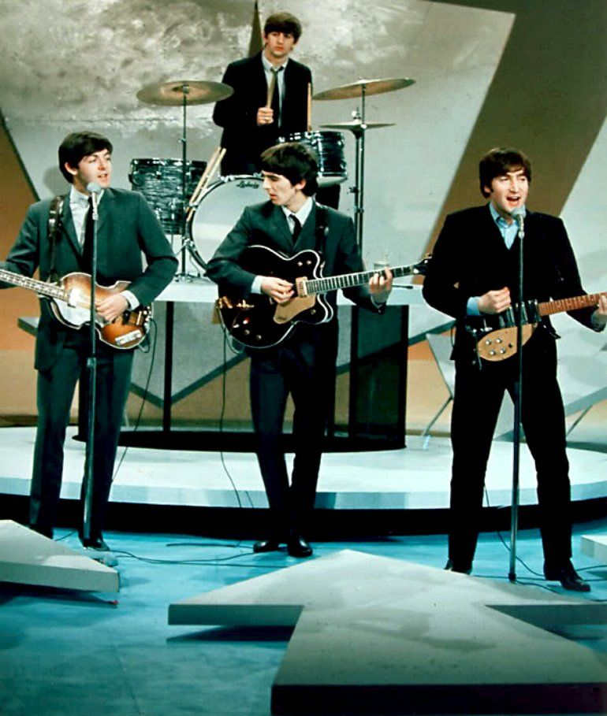
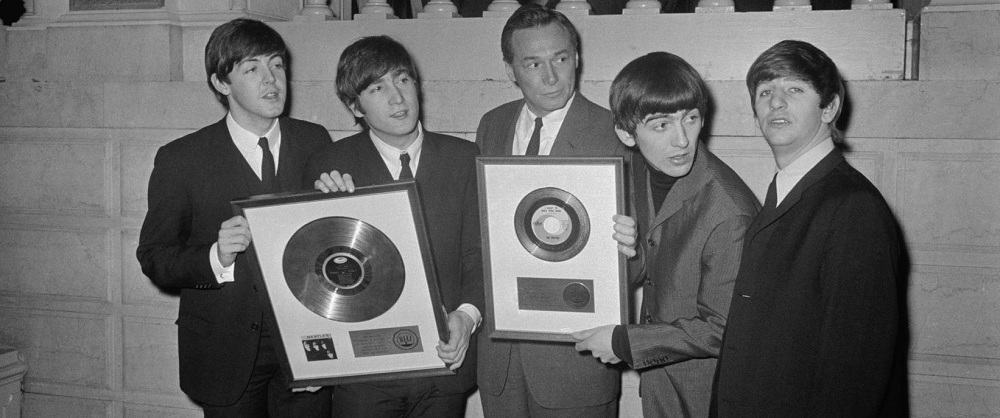
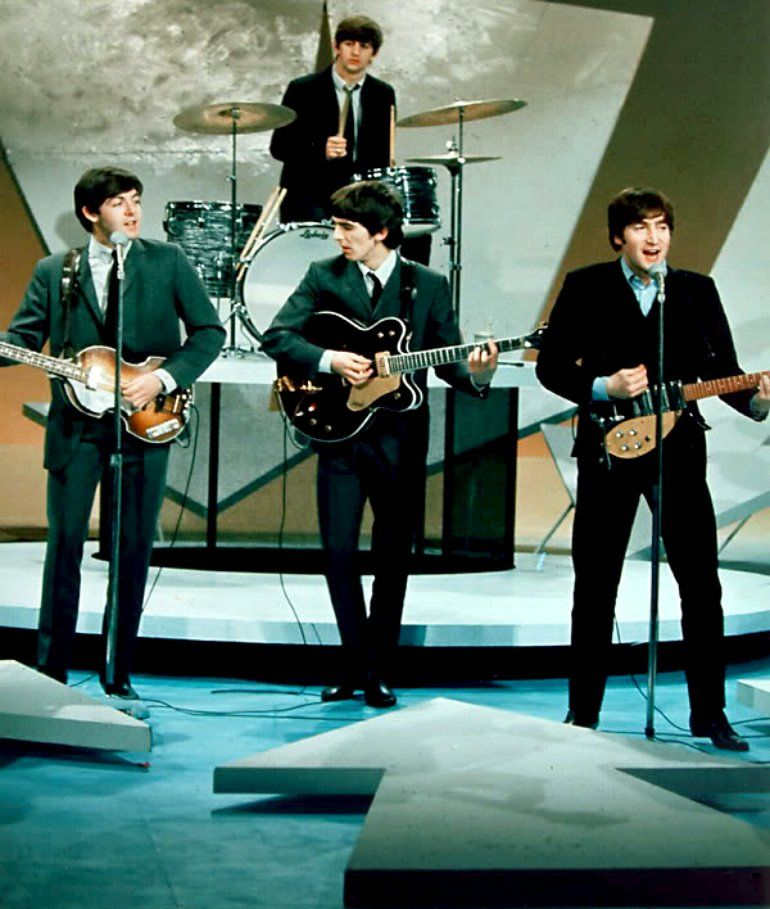

História da banda
Beatles foi uma banda de rock inglesa formada em 1960 na cidade de Liverpool. Formada por
John
Lennon,
Paul McCartney, George Harrison e Ringo Starr, é considerada a banda mais influente de
todos os
tempos.
O
grupo fez parte do desenvolvimento da contracultura da década de 1960 e do reconhecimento da
música
popular
como forma de arte. Enraizados do skiffle, beat e rock and roll da década de 1950, seu
som
incorporava
elementos da música clássica e pop tradicional de maneiras inovadoras; a banda mais tarde
explorou
estilos
musicais que variavam de baladas e música indiana a psicodelia e hard rock. Como pioneiros em
gravação,
composição e apresentação artística, o grupo revolucionou muitos aspectos da indústria da música
e
foi
frequentemente divulgado como líder dos movimentos juvenis e socioculturais da época.
Liderados por Lennon e McCartney, a banda construiu sua reputação tocando em clubes de Liverpool
e
Hamburgo
durante três anos a partir de 1960, inicialmente com Stuart Sutcliffe tocando baixo. Lennon,
McCartney e
Harrison, juntos desde 1958, passaram por uma sucessão de bateristas, incluindo Pete Best, antes
de
pedirem
a Starr que se juntasse a eles, em 1962. O gerente Brian Epstein os profissionalizou e o
produtor
George
Martin guiou e desenvolveu suas gravações, expandindo bastante seu sucesso após o primeiro hit,
"Love Me
Do", no final de 1962. À medida que sua popularidade crescia no intenso frenesi de fãs apelidado
como
"beatlemania", a banda adquiriu o apelido "Quarteto Fabuloso", com Epstein, Martin e outros
relacionados
à banda, às vezes, recebendo o título informal de "Quinto Beatle".
No início de 1964, os Beatles tornaram-se estrelas internacionais, liderando a "Invasão
Britânica"
do
mercado pop dos Estados Unidos e quebrando vários recordes de vendas. Eles logo fizeram sua
estreia
no
cinema com A Hard Day's Night (1964). A partir de 1965, eles produziram gravações cada
vez mais
inovadoras,
incluindo os álbuns Rubber Soul (1965), Revolver (1966) e Sgt. Pepper's Lonely Hearts Club
Band
(1967),
tendo maior sucesso comercial com The Beatles (1968) e Abbey Road (1969). Em 1968, eles fundaram
a
Apple
Corps, uma corporação multimídia que continua supervisionando projetos relacionados ao legado da
banda.
Após
a separação do grupo em 1970, todos os quatro membros obtiveram sucesso como artistas solo.
Lennon
foi
baleado e morto em dezembro de 1980, e Harrison morreu de câncer de pulmão em novembro de 2001.
McCartney e
Starr permanecem musicalmente ativos.
Os Beatles lideram a lista de artistas mais vendidos de todos os tempos, com vendas certificadas
de
mais
de
183 milhões de unidades nos Estados Unidos e vendas estimadas de 600 milhões de unidades em todo
o
mundo.
Eles detêm o recorde da maioria de álbuns número um na parada de álbuns do Reino Unido, maioria
de
hits
número um na parada Hot 100 da Billboard e maioria de singles vendidos no Reino Unido. O grupo
foi
introduzido no Rock and Roll Hall of Fame em 1988, e todos os quatro membros foram nomeados
individualmente
entre 1994 e 2015. Em 2008, o grupo liderou a lista da Billboard dos artistas mais bem sucedidos
de
todos os
tempos na Billboard Hot 100. A banda recebeu sete Grammy Awards, quatro Brit Awards, um
Óscar
(melhor
trilha sonora original por Let It Be, em 1970) e quinze Ivor Novello Awards. A revista Time
os
inseriu
entre as 100 pessoas mais importantes do século XX.
Fonte: Wikipedia The Beatles


 


